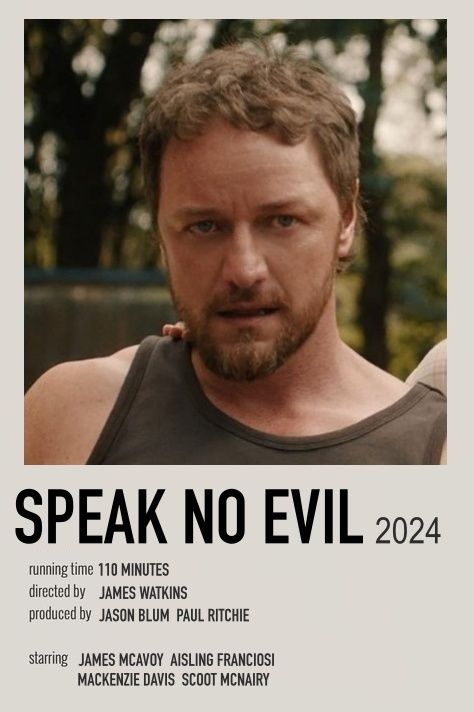

SHOWING TIMES: 10:30am; 13:00pm; 17:00pm
Speak No Evil is a 2024 American psychological horror thriller film written and directed by James Watkins. A remake of the 2022 Danish-Dutch film of the same name, the film stars James McAvoy, Mackenzie Davis, Aisling Franciosi, Alix West Lefler, Dan Hough, and Scoot McNairy. Its plot follows an American family who are invited to stay at a remote farmhouse of a British couple for the weekend, and the hosts soon begin to test the limits of their guests as the situation escalates. Jason Blum serves as a producer through his Blumhouse Productions banner.
AGE RESTRICTION: age 15+